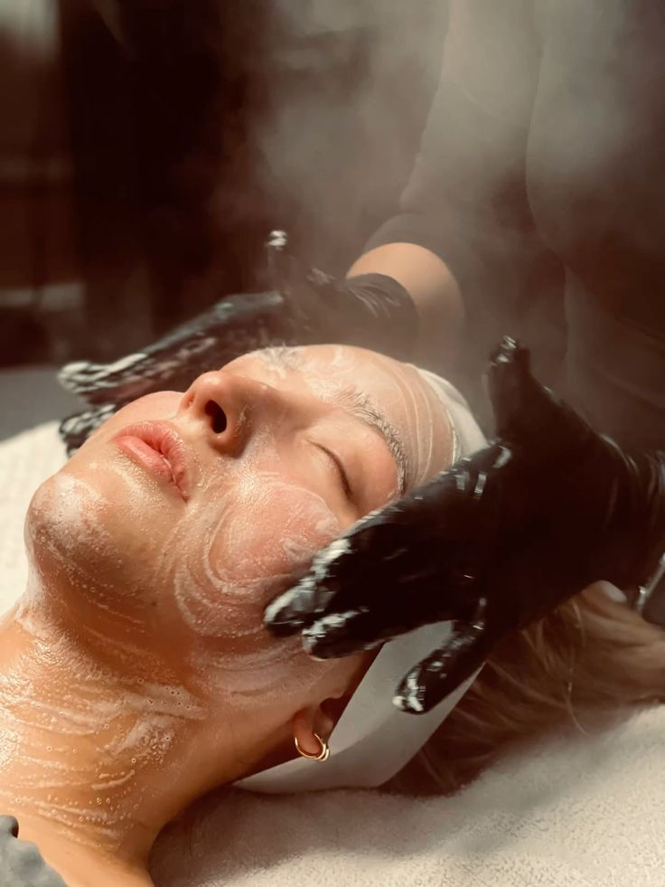
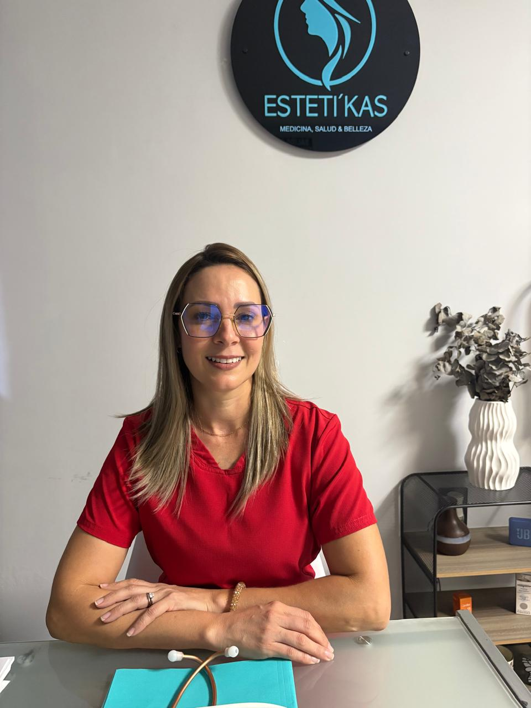

Medicina, Salud y Belleza Avanzada
Tu aliado en el cuidado integral. Procedimientos estéticos personalizados a cargo de profesionales de la salud.
Agendar Valoración
Dra. Karen Mayorga Quirós
La Dra. Karen Mayorga es médico especializada en estética regenerativa y armonización facial. Con años de experiencia y una constante actualización en las últimas tendencias globales, su enfoque se basa en realzar la belleza natural de cada paciente.
Comprometida con la excelencia profesional, garantiza tratamientos seguros y personalizados mediante el uso de tecnología de vanguardia y productos de la más alta calidad.

Katherine Leitón Castillo
Katherine Leitón es especialista certificada en tratamientos faciales y corporales avanzados. Su pasión por el cuidado de la piel la ha llevado a dominar técnicas exclusivas que combinan bienestar y resultados visibles desde la primera sesión.
Su calidez humana y enfoque detallista aseguran que cada visita a Esteti'Kas sea una experiencia de transformación y relajación absoluta.
¿Por qué debo hacerme una Limpieza Facial?
Una limpieza facial al mes es esencial para mantener un buen cuidado de la piel. Con el tiempo, esta puede acumular politución, poros dilatados, puntos negros y células muertas que causan falta de vitalidad. ¡Además, nos ayuda a prevenir líneas de expresión!
- Limpieza profunda
- Hidratación intensiva
- Antienvejecimiento y luminosidad
Cuidados Post Limpieza Facial Profunda
Las Primeras 24 a 48 Horas
- No aplicar maquillaje.
- Adiós al gimnasio y al calor excesivo.
- Realizar limpieza suave en casa.
- Manos quietas (no tocarse la piel).
Hidratación y Protección
- Protección Solar (Vital) siempre.
- Beber mucha agua para hidratar.
- Mantener en calma la zona tratada.
- Aplicar hidratación intensiva.
Plan de Acción
Para que el brillo dure más de una semana:
- Cambiar funda de almohada hoy (para evitar bacterias).
- Retomar ácidos/retinol después de 3 a 5 días (según sensibilidad).
Nota: Es normal que aparezca un ligero enrojecimiento en las primeras horas.
Resultados Reales
La magia detrás de cada tratamientoTratamiento de Limpieza Facial
Resultados visibles tras varias sesiones. Enfocados en limpiar y dar luminosidad a la piel.
Ver más resultados →Preguntas Frecuentes
Recomendamos realizar una limpieza facial profunda aproximadamente una vez al mes para mantener los poros limpios y el ciclo de renovación natural de la piel. Sin embargo, esto puede variar según las necesidades específicas de tu cutis.
No, el botox no deforma la cara. Es un tratamiento que ayuda a reducir la apariencia de las líneas de expresión, como las cejas fruncidas y las líneas entre los ojos, al bloquear los neurotransmisores que causan la contracción muscular que produce estas líneas.
No, el peeling no quema la cara. Es un tratamiento que ayuda a eliminar las células muertas de la piel, lo que puede causar un ligero enrojecimiento en las primeras horas, pero generalmente no causa dolor.
Agenda tu cita hoy
Inicia tu camino hacia una piel radiante. Nuestro equipo te espera en cualquiera de nuestras sucursales.
Ubicaciones
Bataan: Clínica ODONTOBATAAN
Guápiles: Clínica Medical Numancia